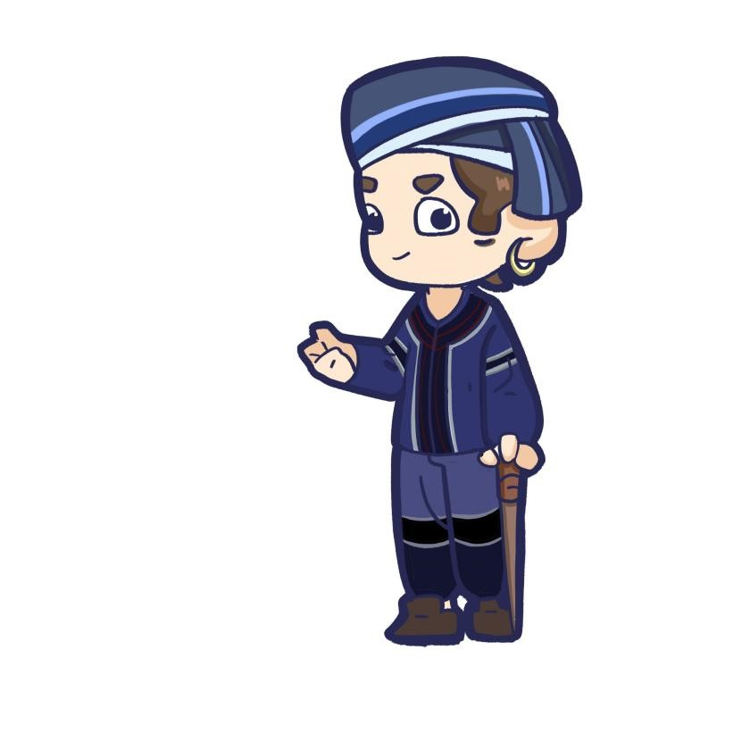

剧本内容创作
Script content creation
1）故事背景介绍
以苗族古歌内容作为剧情设计和解密关卡设置，将人物形象活动作为换装自拍的场景设计，充分调动起五感，以年轻化的方式助力文化传播。湘西苗族在大众中的印象大部分为巫术这类神秘的代表，利用传说故事缘由来满足大众的好奇心。项目首个剧本借用《湘西苗族古老歌话》中《鼓社鼓会》一章作为故事大概情节，讲述苗族先民在迁徙过程中的故事。
沉浸式体验，简单来说就是利用环境建设来让用户完全沉浸其中。传承形式方面，线上体验园区拥有真实传说内容为背景的角色扮演内容，展现苗寨的整体建筑外观和内部结构布局与环境设计；提供苗族古歌原汁原味的听觉享受。在游戏娱乐之余，引导用户去思考故事背后的寓意。最终，让苗族古歌的魅力被更多人发现并感受，让苗语的学习传承现状得到更多人的关注。
2）剧情简介
迁徙的苗族人民因为自然与斗争来到坡坝，扰乱了己嘎、己狞平静的生活。前仇旧恨之下，他们开始攻击苗族人民。苗族勇士仡兰清吉和仡兰平安施法抓住了己嘎、己狞，司祭师举办盛会来庆祝成功。不久，魔婆带着魔娃来找己嘎和己狞，发现苗族人民对亲人的残害，怒而复仇。两位勇士难敌其手，最后是所有苗族人民携手将魔婆击败。万物得到安宁，凡间清吉平安。司祭师、仡兰清吉和仡兰平安代表着苗族人民，己嘎、己狞和魔婆代表着自然，两边的拉扯是人与自然的矛盾。最终的和平象征着，自然与人类也在不断摩擦中找到和谐共生的准则。
3）剧本封面
以苗族少女的形象作为主要呈现内容，展示苗族银饰、苗绣的美丽，微启的唇瓣似乎在吟唱着苗族古歌；此外，以苗族织锦为背景，展现苗族图腾崇拜与劳动人民的智慧结晶。
4）剧情简介图
5）人设介绍
利用《鼓社鼓会》这一苗族古歌作为故事背景的同时，我们根据故事情节提炼出了主要的角色以供玩家选择与后续IP的设计：己嘎、己狞、魔婆、司祭师、仡兰清吉、仡兰平安。前四者都是古歌里原本就存在的人物，后两者则是浓缩了古歌里出现的苗族族民身上的品质而成的。
① 己嘎：男 25岁，心存善意，颠沛流离的生活动摇了他的原则，偏听偏信。
② 己狞：男 35岁，憎恶入侵者，祖辈的教训被他当成行事准则，容易极端。
③ 魔婆:女 30岁，生无定居，漂泊前生，遇见珍爱的人与风景便誓要保护，无论结局如何
④ 司祭师:女 15岁，天真烂漫，却被父亲过早推出来承担责任，宽和柔软
⑤ 仡兰清吉:女 20岁，智勇双全，经历过一段悲惨的童年，内心自厌
⑥ 仡兰平安:男 25岁，领导力强，有一个当大英雄的目标，容易冲动

6)剧本杀部分内容
在相对应的房屋里播放特色的苗族古歌，并设置特定的暗号作为线索。
品牌文创设计
Brand cultural and creative design
根据苗族古歌内容设计情节，以动漫和影视呈现形式设计品牌文化IP形象。随后，创作的剧本故事人设可以作为人物形象，在“一带一路”上联合其他文化元素设计剧本并展开跨界合作，促进地区的文化交流。苗族古歌内容的形象化，既可以作为虚拟园区建设的道具，又可以发展成为文创周边。
剧本情节中出现的线索道具等都可以制作成具有纪念意义的文创产品，用户在园区体验时便已第一时间接触到这些文创产品，就可以将故事内涵注入到产品生产创造之中。同时，文创设计时增加苗族传统文化中蝴蝶、枫叶等图腾元素，增添产品的民族特色。
 湘西苗族古歌
湘西苗族古歌